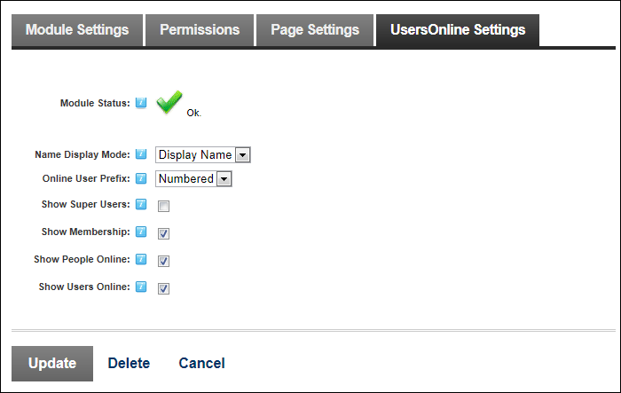

Setting Membership Details
How to select the member details that are displayed for Users Online.
-
- Select the UsersOnline Settings tab.
- At Name Display Mode, select the format for user's names from these options:
- Display Name: Display the Display Name entered by user's on their profile. This is the default option.
- Username: Select to display the user's unique username.
- First Name: Select to display the user's first name.
- Last Name: Select to display the user's last name.
- Full Name: Select to display both the user's first and last names.
- At Online User Prefix, select from these options to choose what is displayed before each user listed in the "Online Now" section:
- <None>: Displays names only.
- Image: Display the Users Online
 image beside each name. This is the default option.
image beside each name. This is the default option. - Numbered: Display names in a number listed.
- At Show Super Users, to include SuperUser accounts - OR - to exclude SuperUser accounts. SuperUser accounts are excluded by default.
- At Show Membership, to display the Membership section - OR - to hide this section. This section is displayed by default.
- At Show People Online, to display the People Online section - OR - to hide this section. This section is displayed by default.
- At Show Users Online, to display the Online Now section - OR - to hide this section. This section is displayed by default.

-
Click the Update button.